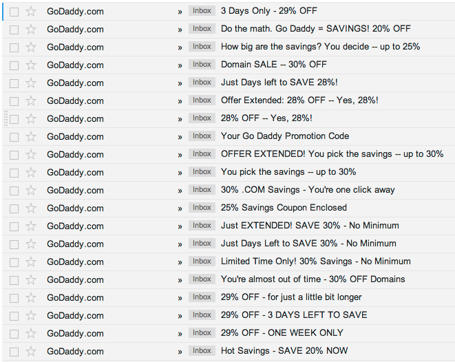

I want a site
(づ｡◕‿‿◕｡)づ
Disclaimer
"I don't know what I don't know."
A Basic Site
1. Domain
2. Hosting
3. Look and Feel
$_$
An average domain costs $10 - $15 a year
GoDaddy?
GoDaddy?

Hover.com
10/10 highly recommend
ᕦ(ò_óˇ)ᕤ
Acquiring a Domain
- Sign up with a domain provider (Hover.com)
- Pick a name
- Check out and pay $$$
Alternatives
(Free)
xeniatay.wordpress.comxeniatay.tumblr.com- Github Pages:
-
xanga, livejournal, myspace
xeniatay.github.io
xeniatay.github.io/WaterlUX-Web-Design-Talk
Hosting
Shared Hosting
Shared Hosting Examples
- GoDaddy:
$7.99$3.99/month (sale right now!) - Lunarpages: $9/month + extra for SSH and other features
- Media Temple: $20/month, includes email forwarding etc.
- Site5: $5 - $12/month
Dedicated Hosting
Installing Wordpress on Shared Hosting
- Download and upload Wordpress onto server (FTP)
- Create a database and MySQL User through CPanel/PHPMyAdmin
- Run Wordpress install by accessing site URL
Installing Wordpress on Dedicated Hosting
Note: this is for a fresh server
- Configure Root Login
- Configure SSH Access
- Install LAMP (Linux, Apache, MySQL, PHP)
- Set up phpMyAdmin
- Download Wordpress onto server (wget)
- Create a database and MySQL User
- Run Wordpress install by accessing site URL
Dedicated Hosting examples
- Digital Ocean: $5/month or $0.007/hour
- Heroku: "scales with you", $0.05/dyno-hour
- AWS: 1 year free!
- Linode: $20/month
Alternatives
- Wordpress: $8/year
- Tumblr: ~free~
- Github Pages: ~free~
For use with a custom domain
Look and Feel
Resources
- creativemarket.com
- themeforest.net
- Bootstrap, PureCSS, Skeleton, Foundation
- SquareSpace: $8/month
ヽ(´ー｀)ノ
End
@xeniatay